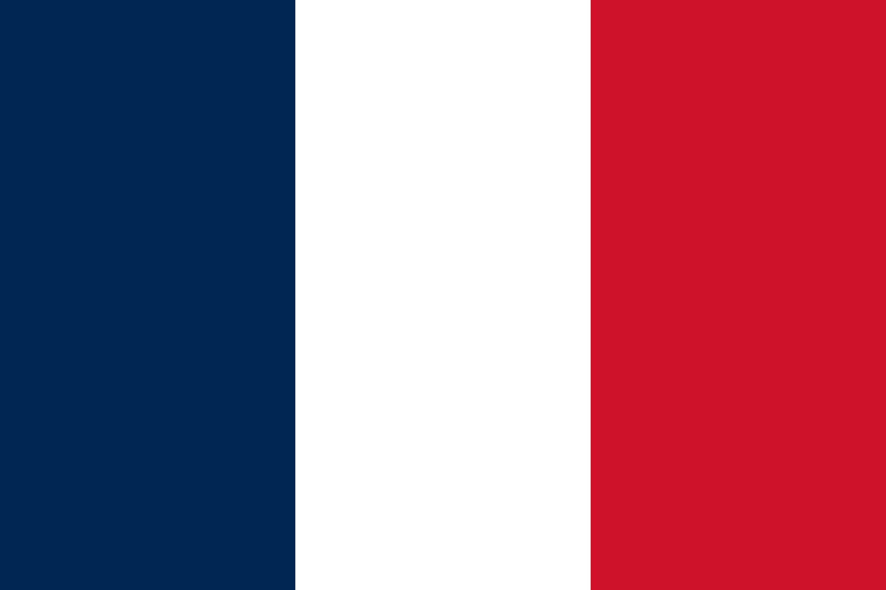
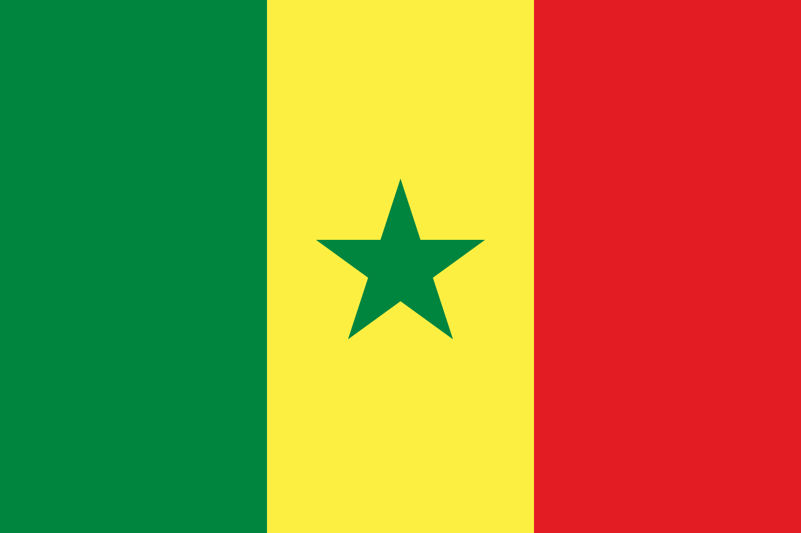
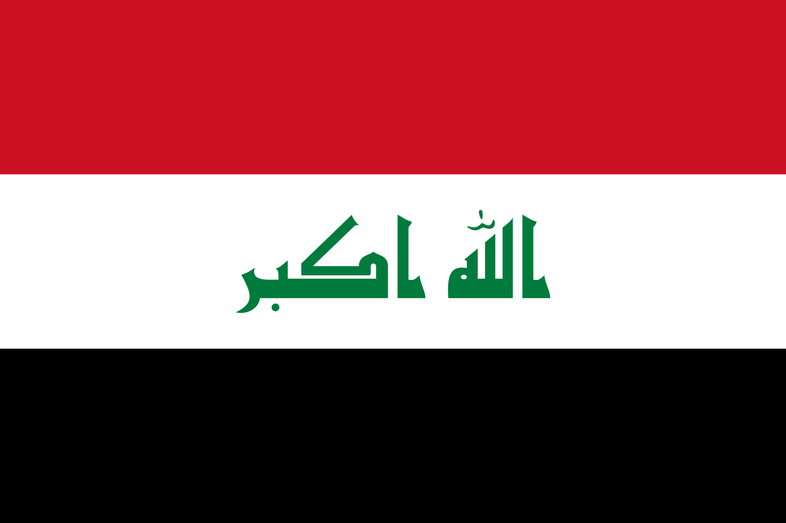
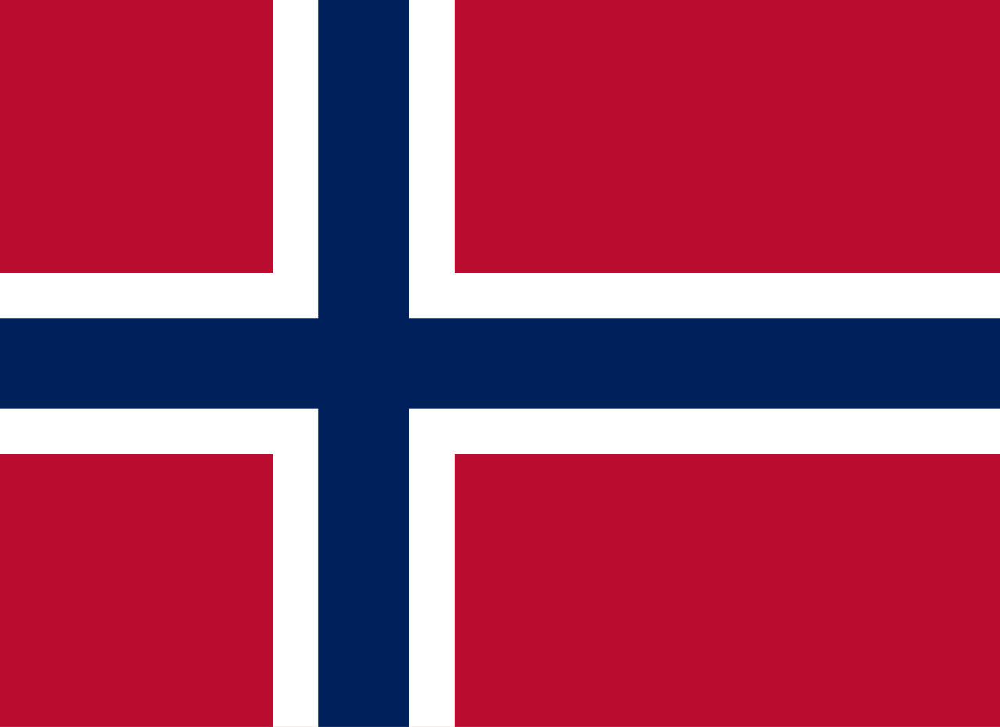

Copa Mundial de la FIFA




París
Stade de France
Francia es una de las selecciones más importantes del mundo, campeona en 1998 y 2018.
Es conocida por su gran generación de jugadores talentosos.
Dakar
Stade Me Abdoulaye Wade
Senegal sorprendió al mundo en 2002 llegando a cuartos de final.
Es uno de los equipos africanos más competitivos.
Bagdad
Basra International Stadium
Irak participó en el Mundial de 1986 y ha competido en Asia.
Ganó la Copa Asiática en 2007.
Oslo
Ullevaal Stadion
Noruega tuvo su mejor etapa en los años 90 participando en varios mundiales.
Actualmente cuenta con grandes jugadores como Haaland.